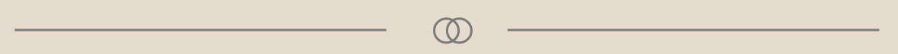
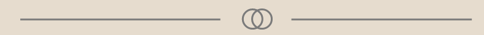
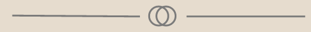

02.02.01 EMNESITE
Beskrivelse af opgaven
Denne opgave er lavet i Tema 2. Min opgave var, at lave mit eget site om et valgfrit enme. Jeg skulle vælge en designstil og udvikle et design ud fra denne.
Til denne opgave skulle jeg sætte mig godt ind i de designprincipper, den stil jeg havde valgt benyttede. Jeg skulle på baggrund af dette udarbejde moodboards, wireframe og styletile.
Desuden skulle jeg bruge css til at style med farver, typografi, marginer osv. og tilføje html og css kode, så mit website blev responsivt.
Hvad jeg lærte
I forbindelse med denne opgave arbejdede vi med forskellige designkonventioner, gestaltprincipper, kontrast samt moodboard, wireframes, mock-up og styletile. Desuden arbejdede vi også med fonte, tekstopsætning og designanalyse.
Vi lærte også at arbejde med værktøjer til billedbehandling såsom beskæring, størrelse, filformater samt XD til udvikling af mock-ups, hvor vi blandt andet snakkede om ophavsret og rettigheder angivet som metadata i digitale billeder.
Processen
Til denne opgave valgte jeg at tage udgangspunkt i stiltypen Neumorfi. For at få en bedre forståelse af stilen, lavede jeg en designanalyse og i den forbindelse fandt jeg ud af, at jeg godt kunne tænke mig, at prøve at få mit emne ”lys” mere integreret i min hjemmeside, end bare at skrive om det.
Herefter lavede jeg et moodboard hvor jeg satte meget vægt på former, lag og rolige farver. Jeg fandt de billeder jeg godt kunne tænke mig, at benytte på min hjemmeside, og begyndte at lege lidt med forskellige farvekontraster og lavede herefter mit styletile.
For at holde mig til stiltypen Neumorfi, lavede jeg et meget enkelt wireframe, og begyndte herefter at kode med henblik på at integrere mit emne lys.